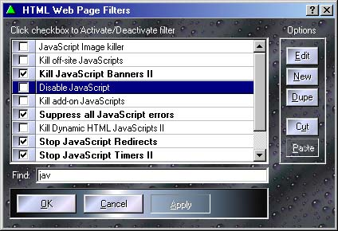

Clicking the "Web Page" filter button opens a list of all Web Page filters. Each filter can be individually enabled or disabled by checking the check box next to it.

The Default Filters
Web filters are perhaps the most useful feature of the Proxomitron. With them you can stop stuff like ad banners, pop-up windows, auto-play music and more. Simply click the checkbox of any filter you wish to use then hit reload on your browser to try them out. If you're looking for more information on what each default filters does, check out the Hitch-Hikers Guide to the Default Web Filters.
Of couse, you're not limited to these initial filters - you can modify them or create entirely new ones of your own!
Web Page Filter Ordering
You can use the "Cut" and "Paste" buttons to re-order web filters. With web page filters, order is important! This is not the case with HTTP header filters. Normally, when a filter matches a bit of HTML it "uses it up" so no other filter can match it. This first come first served approach allows you to give priority to certain filters. A filter that only matched a specific case would come before a more general "catch all" filter that matched on the same type of HTML tag. Filters at the top of the list have the highest priority, filters at the end have the lowest. Note that in some cases you might want a filter not "use up" the text it matches and allow other filters a crack at it. Look at "Allow for multiple matches" under the Web Page Filter Editor dialog to see how to do this.
Changes to web filters
Enabling or disabling a filter check box takes effect immediately, however any changes or additions you make to filters themselves won't go into effect until the "OK" or "Apply" button is pressed - until then the check box of these modified filters will be show as grayed. This allows you to change filters while a web page is still using them (or in reality copies of them). For changes to actually take effect, the filters must not be in use. Also, pressing "Cancel" in this dialog will undo all pending changes you've made to the filters - this includes filters you've added or deleted.
Editing Web Filters
Use "Edit", "New", and "Dupe" to modify web page filters. "Edit" edits the selected filter (you can also double-click the filters name) and "New" creates a new filter. "Dupe" creates a copy of the selected filter which you can then modify. It's useful for using an already existing filter as a starting point for your new filter.
All of these button will bring up the Web Page Filter Editor - use it to modify the rules a particular filter uses.
Sharing your web filters
Right-clicking over the filter name area bring up a context menu allowing you to import or export selected filters to the clipboard. This is an easy way to share specific filters with others or add new filters yourself. For example, to share some filters, just select the filter(s) you wish, right-click to export them to the clipboard, then paste them into an email or message board. Exported filters will be in the same plain-text form used by the config file and can easily be imported by someone else. When sharing filters be sure not to delete any of the included headers or Proxomitron may not be able to import them again.
To import filters just, copy the text into the clipboard from the original source (which could be an email, message board, or any other text source) and select the import option. If Proxomitron can find enough text to make a new filter, it will be added to your list highlighted in red.
 Return to main index
Return to main index